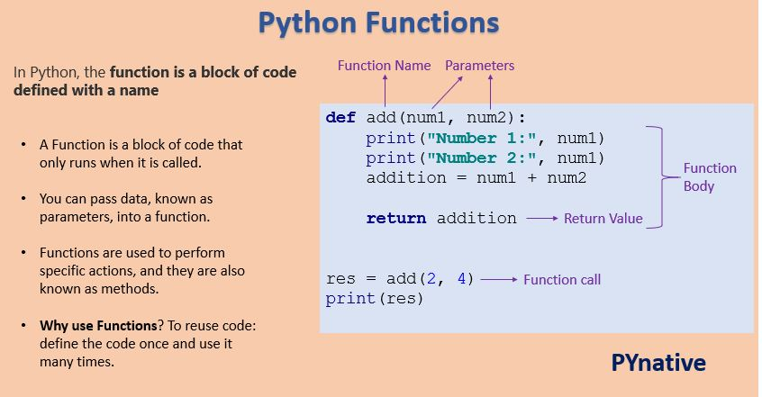
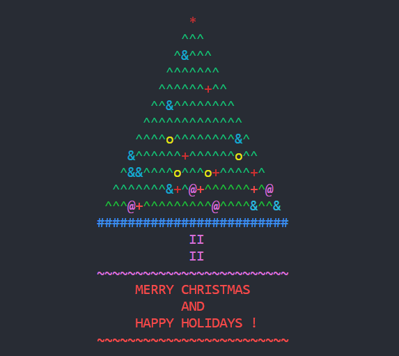
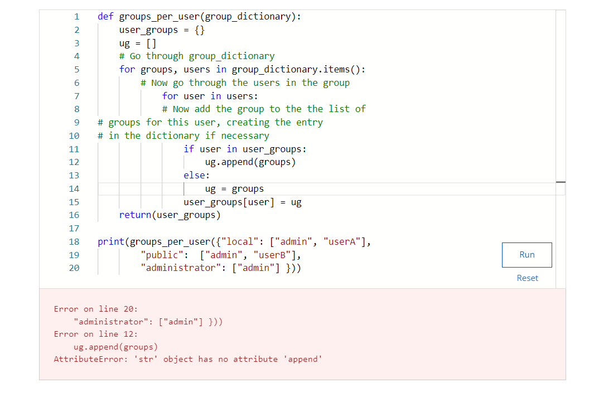

Week 1
September 5 - 8
Start of the year!!! Spent the week watching imitation game, and in the process learned about Alan Turing. He was the man that cracked the Enigma machine during WW2.
September 5 - 8
Start of the year!!! Spent the week watching imitation game, and in the process learned about Alan Turing. He was the man that cracked the Enigma machine during WW2.
September 11 - 15

Start of python coding. Learning basic things like print statements, variables, and input statements.
September 18 - 22

Started our technology inventor projects. Learning everything there was to understand about a technological pioneer. I decided to do mine on Gary Kildall.
September 25 - 29
More python on CSCircles. We also started to get into if statemnts and understanding their application.
October 2 - 6
Even more python!!! Basically learnt more about if statements, as well as we got to hear from some people from Nokia and their summer programs
October 9 - 13
First Week of CSE (Every Wednesday). Basically learnt how to use a computer terminal and install admin privleges to a user from the terminal.
October 16 - 20
For the week we continued to work on CMU and create more things with shapes. Also for CSE we learnt how to use a raspberry pi.
October 23 - 27
New computer assignment - languages of the world. Basically my partner and I choose to research about python since its been the focus of the course. For this assignment we had to create a poster based on python.
October 30 - November 3
In python we continued with lists and loops, expanding our knowledge even more. In CSE we did more raspberry pi stuff and learning about Cyber-security.
November 6 - 10
Start of functions for python. Basically a function makes it easier to call things instead of having to write the code all over again (Like a short-cut code).
November 13 - 17
In CMU we learnt about mouse-events. Which basically allowed us to control things with our mouse. In CSE we started to get into the advanced challenges, like creating certain paterns on the pi board.
November 20 - 24
In CMU we did more shape properties which allowed us to manipulate drawings even more. In python we did more assignments allowing us to strengthen our knowledge
November 27 - December 1
Same stuff as Week 12, we really just strengthened our knowledge on the current teachings.
December 4 - 8
In CMU we did more custom properties and methods allowing us to make our codes even more complex. For example, making dynamic images used custom codes like mouse events.
December 11 - 15
More challenegs on CMU and CodeHS. For python we went more indepth on strings and how to manipulate them.
December 18 - 22
Done for CodeHS!!! Also CSE was finished and we ended it off with creating a christmas themed task.
January 8 - 12
Back from Christmas break sadly. Now we continue to work on CodeHS and make sure we have finished everything up to strings. Also we were marked on everyday tasks having to do with what we learnt over the year.
January 15 - 19

Full RST week. Finishing this portfolio is part of what was done but the majority was making a unique game using all the knowledge we have of python coding. For this my partner and I created wordle and unscramble as our playable game.